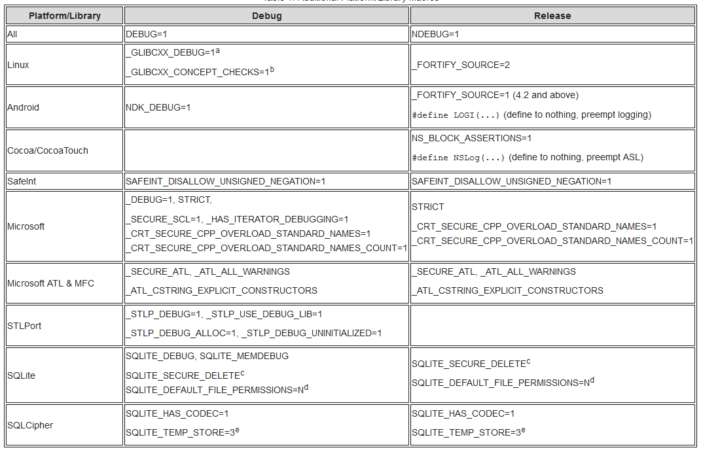
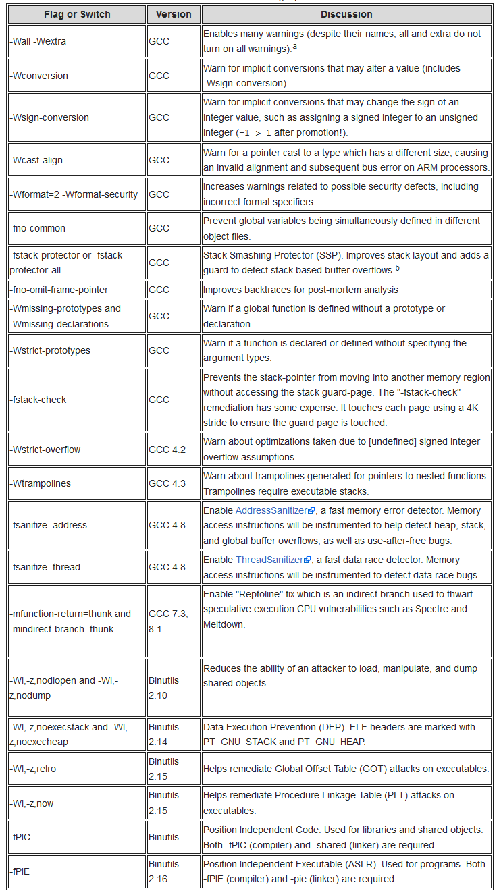
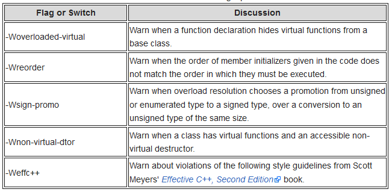
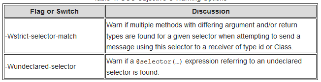
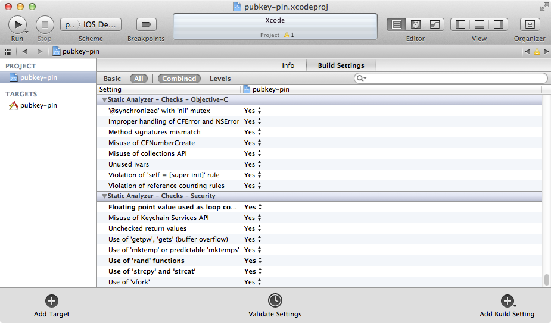
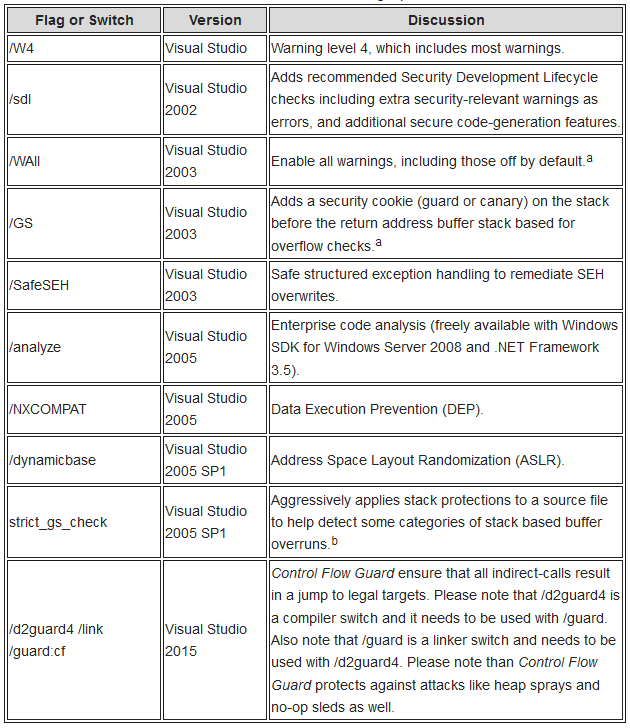
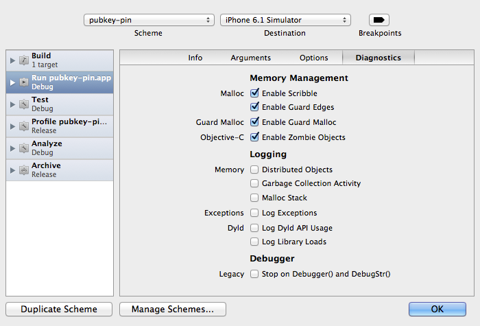
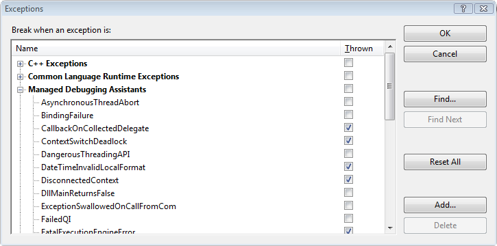

Шпаргалка по усилению защиты инструментальной цепочки на основе C¶
Введение¶
Усиление защиты инструментальной цепочки на основе C — это комплекс настроек проекта, который поможет создавать надёжный и безопасный код при использовании языков C, C++ и Objective C в различных средах разработки. В данной статье рассматриваются инструментальные цепочки Microsoft и GCC для языков C, C++ и Objective C. Она проведёт вас через шаги, необходимые для создания исполняемых файлов с более надёжной защитой и усиленной интеграцией с доступными средствами безопасности платформы. Правильная настройка инструментальной цепочки также позволяет получить ряд преимуществ в процессе разработки, включая расширенные предупреждения, статический анализ и самодиагностирующийся код.
При усилении защиты инструментальной цепочки необходимо рассмотреть четыре области: конфигурацию, препроцессор, компилятор и компоновщик. Практически все эти области упускаются из виду или игнорируются при настройке проекта. Это явление носит повсеместный характер и затрагивает почти все проекты, включая автоматически настраиваемые, основанные на makefile, Eclipse, Visual Studio и Xcode. Важно устранять пробелы на этапе конфигурации и сборки, поскольку на некоторых платформах добавить защиту к уже распространённому исполняемому файлу крайне сложно или вовсе невозможно.
Эта статья носит предписывающий характер и не будет вдаваться в семантические споры или предположения о поведении. Некоторая информация, например мотивация комитета C/C++ и происхождение program diagnostics, NDEBUG, assert и abort(), по-видимому, утеряна, как сказание из «Властелина колец». Поэтому статья определяет семантику (например, философию конфигураций сборки «debug» и «release»), устанавливает поведение (например, что должен делать assert в конфигурациях «debug» и «release») и формулирует позицию. Если приведённый подход покажется вам слишком жёстким, вы можете скорректировать его по своему усмотрению.
Защищённая инструментальная цепочка — не панацея. Это лишь один из элементов общей стратегии инженерного процесса, способствующей успеху. Она дополняет существующие процессы, такие как статический анализ, динамический анализ, безопасное кодирование, негативные тест-наборы и т.д. Такие инструменты, как Valgrind и Helgrind, по-прежнему будут необходимы, а проект всё равно потребует продуманных проектных решений и архитектуры.
Проект OWASP ESAPI C++ использует собственные наработки. Многие примеры из этой статьи взяты непосредственно из проекта ESAPI C++.
Наконец, для тех, кто предпочитает краткое изложение материала, доступна шпаргалка. Пожалуйста, посетите шпаргалку по усилению защиты инструментальной цепочки на основе C для сокращённой версии.
Мудрость¶
Код обязан быть корректным. Он должен быть безопасным. Он может быть эффективным.
Д-р Джон Бентли: «Если код не обязан быть корректным, я сделаю его настолько быстрым, насколько вам угодно».
Д-р Гэри МакГроу: «Не следует полагаться исключительно на функции и средства безопасности при создании защищённого программного обеспечения, поскольку безопасность является эмерджентным свойством всей системы в целом и зависит от правильного построения и интеграции всех её частей».
Конфигурация¶
Конфигурация — это первая возможность настроить проект на успех. Необходимо не только настроить проект для достижения целей надёжности и безопасности, но и правильно настроить интегрированные библиотеки. Как правило, у вас есть три варианта. Во-первых, можно использовать утилиты автоматической настройки, если вы работаете в Linux или Unix. Во-вторых, можно написать makefile вручную — этот подход преобладает в Linux, macOS и Unix, но применим и к Windows. Наконец, можно воспользоваться интегрированной средой разработки (IDE).
Конфигурации сборки¶
На данном этапе следует сосредоточиться на настройке двух сборок: Debug (отладочная) и Release (выпускная). Debug используется для разработки и включает полную инструментацию. Release настраивается для производственной среды. Различие между двумя конфигурациями обычно заключается в уровне оптимизации и уровне отладки. Третья конфигурация — Test (тестовая) — как правило, является особым случаем Release.
Настройки отладочной и выпускной сборок обычно диаметрально противоположны. Конфигурации Debug не имеют оптимизаций и содержат полную отладочную информацию, тогда как конфигурации Release включают оптимизации и минимальную или умеренную отладочную информацию. Кроме того, отладочный код содержит полные проверки assert и дополнительную интеграцию с библиотеками, такими как mudflaps и malloc guards, например dmalloc.
Конфигурация Test зачастую представляет собой конфигурацию Release, которая открывает доступ ко всем интерфейсам для тестирования и собирает тестовое окружение. Например, все функции-члены (класс C++) и все интерфейсы (библиотека или разделяемый объект) должны быть доступны для тестирования. Многие приверженцы объектно-ориентированного программирования выступают против тестирования приватных интерфейсов, однако здесь речь идёт не об объектно-ориентированности. Речь идёт (q.v.) о создании надёжного и безопасного программного обеспечения.
В GCC 4.8 была введена оптимизация -Og. Обратите внимание, что это лишь оптимизация, и для неё по-прежнему требуется обычный уровень отладки с помощью -g.
Отладочные сборки¶
Отладочные сборки — это среда, в которой разработчики проводят большую часть времени при диагностике проблем, поэтому данная сборка должна концентрировать силы и инструменты, являясь своего рода «множителем силы». Хотя многие этого не осознают, отладочный код ценится выше выпускного, поскольку он снабжён дополнительной инструментацией. Отладочная инструментация заставляет программу стать практически «самодиагностирующейся» и помогает обнаруживать ошибки, такие как неверные параметры, неудачные вызовы API и проблемы с памятью.
Самодиагностирующийся код сокращает время на устранение неисправностей и отладку. Чем меньше времени вы проводите под отладчиком, тем больше времени остаётся на разработку и реализацию новых функций. Если код сдаётся без отладочной инструментации, его следует исправить, добавив инструментацию, или отклонить.
Для GCC оптимизации и создание отладочных символов управляются двумя ключами: -O и -g. Для минимальной отладочной сессии следует включить в CFLAGS и CXXFLAGS следующее:
-O0 -g3 -ggdb
-O0 отключает оптимизации, а -g3 обеспечивает максимальный объём отладочной информации. Может потребоваться использовать -O1, чтобы выполнялся некоторый анализ. В противном случае отладочная сборка будет лишена ряда предупреждений, отсутствующих в выпускных сборках. -g3 обеспечивает максимальный объём отладочной информации для сессии отладки, включая символьные константы и #define. -ggdb добавляет расширения для помощи в сессии отладки под GDB. Для полноты картины: Ян Крахтовил указал в приватном письме, что -ggdb в настоящее время не имеет никакого эффекта.
Выпускные сборки также должны рассматривать конфигурационную пару -mfunction-return=thunk и -mindirect-branch=thunk. Это исправление «Retpoline» — косвенная ветвь, предназначенная для противодействия уязвимостям спекулятивного исполнения CPU, таким как Spectre и Meltdown. CPU не может предсказать, какой код выполнить спекулятивно, поскольку это косвенная (а не прямая) ветвь. Это дополнительный уровень косвенности, подобный вызову указателя через указатель.
Отладочная сборка также должна определять DEBUG и обеспечивать, что NDEBUG не определён. NDEBUG устраняет «программную диагностику» и имеет нежелательные поведение и побочные эффекты, которые подробнее рассмотрены ниже. Определения должны присутствовать для всего кода, а не только для программы. Это нужно для всего кода (вашей программы и включённых библиотек), потому что вам необходимо знать, как они дают сбои (помните: отчёт об ошибке получаете вы, а не сторонняя библиотека).
Кроме того, следует использовать другие соответствующие флаги, например -fno-omit-frame-pointer. Наличие указателя кадра облегчает декодирование трассировок стека. Поскольку отладочные сборки не поставляются пользователям, в исполняемом файле допустимо оставлять символы. Программы с отладочной информацией не снижают производительность. Например, см. How does the gcc -g option affect performance?
Наконец, убедитесь, что проект включает дополнительные диагностические библиотеки, такие как dmalloc и Address Sanitizer. Сравнение некоторых инструментов проверки памяти можно найти в Comparison Of Memory Tools. Если вы не включаете дополнительную диагностику в отладочные сборки, начните это делать — не страшно обнаружить ошибки, которые вы не искали.
Выпускные сборки¶
Выпускные сборки — это то, что получает ваш пользователь. Они предназначены для работы на производственном оборудовании и серверах и должны быть надёжными, безопасными и эффективными. Стабильная выпускная сборка — результат кропотливой работы в процессе разработки.
Для выпускных сборок следует включить в CFLAGS и CXXFLAGS следующее:
-On -g2
-On устанавливает оптимизации по скорости или по размеру (например, -Os или -O2), а -g2 обеспечивает создание отладочной информации.
Отладочная информация должна быть удалена из исполняемого файла, но сохранена на случай символизации отчёта об аварийном завершении из поля. Хотя это и нежелательно, отладочная информация может быть оставлена без снижения производительности. Подробности см. в How does the gcc -g option affect performance?.
Выпускные сборки также должны определять NDEBUG и обеспечивать, что DEBUG не определён. Время отладки и диагностики прошло, поэтому пользователи получают производственный код с максимальными оптимизациями, без «программной диагностики» и с другими улучшениями эффективности. Если вы не можете выполнить оптимизацию или производите чрезмерное логирование, это обычно означает, что программа не готова к производственной среде.
Если вы полагались на assert с последующим abort(), то злоупотребляли «программной диагностикой», которой нет места в производственном коде. Если вам нужен дамп памяти, создайте его явно, чтобы пользователям не приходилось беспокоиться о секретах и другой чувствительной информации, записываемой в файловую систему и отправляемой в открытом виде по электронной почте.
Для Windows следует использовать /Od для отладочных сборок и /Ox, /O2 или /Os для выпускных сборок. Подробности см. в /O Options (Optimize Code) от Microsoft.
Тестовые сборки¶
Тестовые сборки служат для эвристической проверки с помощью позитивных и негативных тест-наборов. В тестовой конфигурации тестируются все интерфейсы, чтобы убедиться, что они соответствуют спецификации и ожиданиям. «Ожидания» субъективны, но они должны включать отсутствие сбоев и нарушения памяти даже при негативных тестах.
Поскольку тестируются все интерфейсы (а не только публичные), CFLAGS и CXXFLAGS должны включать:
-Dprotected=public -Dprivate=public
Также следует изменить __attribute__ ((visibility ("hidden"))) на __attribute__ ((visibility ("default"))).
Позитивные тесты обычно не вызывают затруднений. Гораздо интереснее негативные тесты: следует сосредоточиться на попытках заставить программу дать сбой, чтобы убедиться, что она делает это корректно. Помните, что злоумышленник не будет вежлив, пытаясь нарушить работу программы, и именно ваш проект получит отчёт об ошибке или попадёт на Full Disclosure или Bugtraq — а не <некая библиотека>, которую вы включили.
Autotools¶
Инструменты автоматической настройки широко распространены во многих системах на базе Linux и Unix. К ним относятся Autoconf, Automake, config и Configure. Они совместно создают файлы проекта из скриптов и шаблонных файлов. После завершения процесса проект должен быть настроен и готов к сборке с помощью make.
При использовании инструментов автоматической настройки стоит упомянуть несколько файлов, заслуживающих внимания. Они являются частью цепочки Autotools и включают m4, а также различные файлы *.in, *.ac (Autoconf) и *.am (Automake). Иногда вам придётся открывать их или результирующие makefile, чтобы скорректировать «стандартную» конфигурацию.
У инструментов конфигурации командной строки в цепочке есть три недостатка: (1) они часто игнорируют запросы пользователя, (2) они не могут создавать конфигурации, и (3) безопасность зачастую не является их целью.
Чтобы продемонстрировать первую проблему, настройте проект следующим образом: configure CFLAGS="-Wall -fPIE" CXXFLAGS="-Wall -fPIE" LDFLAGS="-pie". Скорее всего, вы обнаружите, что Autotools проигнорировал ваш запрос, то есть команда ниже не даст ожидаемых результатов. В качестве обходного пути вам придётся открыть скрипт m4, makefile.in или makefile.am и исправить конфигурацию.
$ configure CFLAGS="-Wall -Wextra -Wconversion -fPIE -Wno-unused-parameter
-Wformat=2 -Wformat-security -fstack-protector-all -Wstrict-overflow"
LDFLAGS="-pie -z,noexecstack -z,noexecheap -z,relro -z,now"
Что касается второго пункта, вас ждёт разочарование: Automake не поддерживает концепцию конфигураций. Это не полностью вина Autoconf или Automake — в основе проблемы лежит Make и его неспособность обнаруживать изменения. В частности, Make проверяет только временны́е метки изменений зависимостей и целей и не отслеживает такие переменные, как CFLAGS и CXXFLAGS. В результате вы не получите ожидаемого результата, когда выполните make debug, а затем make test или make release.
Наконец, такие инструменты, как Autoconf и Automake, упускают многие возможности повышения безопасности и поставляются в небезопасной конфигурации по умолчанию. Существует ряд ключей компилятора и флагов компоновщика, улучшающих защитные возможности программы, однако они не включены «из коробки». Инструменты вроде Autoconf, которые призваны решать эту задачу, зачастую ориентируются на наименьший общий знаменатель.
Недавняя дискуссия в списке рассылки Automake наглядно иллюстрирует проблему: Enabling compiler warning flags. Попытки улучшить конфигурации по умолчанию встретили сопротивление, и никаких мер принято не было. Противники, как правило, апеллируют к тому, что «<некое полезное предупреждение> также генерирует ложные срабатывания» или «<некая малоизвестная платформа> не поддерживает <установленную функцию безопасности>». Примечательно, что Дэвид Уилер, автор Secure Programming for Linux and Unix HOWTO, был одним из тех, кто пытался улучшить ситуацию.
Makefile¶
Make — один из древнейших инструментов сборки, датируемый 1970-ми годами. Он доступен в Linux, macOS и Unix, поэтому вы будете часто сталкиваться с проектами, использующими его. К сожалению, Make имеет ряд недостатков (Recursive Make Considered Harmful и What's Wrong With GNU make?), которые могут доставлять неудобства. Несмотря на проблемы с Make, ESAPI C++ использует его преимущественно по трём причинам: во-первых, он повсеместно распространён; во-вторых, им проще управлять, чем семейством Autotools; и в-третьих, использование libtool было исключено.
Рассмотрим ситуацию, когда вы: (1) вводите make debug, а затем make release. Каждая сборка потребует разных CFLAGS из-за оптимизаций и уровня поддержки отладки. В makefile вы извлечёте соответствующую цель и установите CFLAGS и CXXFLAGS примерно так (взято из makefile ESAPI C++):
## makefile
DEBUG_GOALS = $(filter $(MAKECMDGOALS), debug)
ifneq ($(DEBUG_GOALS),)
WANT_DEBUG := 1
WANT_TEST := 0
WANT_RELEASE := 0
endif
…
ifeq ($(WANT_DEBUG),1)
ESAPI_CFLAGS += -DDEBUG=1 -UNDEBUG -g3 -ggdb -O0
ESAPI_CXXFLAGS += -DDEBUG=1 -UNDEBUG -g3 -ggdb -O0
endif
ifeq ($(WANT_RELEASE),1)
ESAPI_CFLAGS += -DNDEBUG=1 -UDEBUG -g -O2
ESAPI_CXXFLAGS += -DNDEBUG=1 -UDEBUG -g -O2
endif
ifeq ($(WANT_TEST),1)
ESAPI_CFLAGS += -DESAPI_NO_ASSERT=1 -g2 -ggdb -O2 -Dprivate=public
-Dprotected=public
ESAPI_CXXFLAGS += -DESAPI_NO_ASSERT=1 -g2 -ggdb -O2 -Dprivate=public
-Dprotected=public
endif
…
## Объединяем флаги ESAPI с флагами, предоставленными пользователем. Выполняем дополнительный шаг,
## чтобы пользовательские флаги следовали за нашими — это даёт им приоритет.
override CFLAGS := $(ESAPI_CFLAGS) $(CFLAGS)
override CXXFLAGS := $(ESAPI_CXXFLAGS) $(CXXFLAGS)
override LDFLAGS := $(ESAPI_LDFLAGS) $(LDFLAGS)
…
Make сначала соберёт программу в конфигурации debug для сессии под отладчиком, используя правило, похожее на следующее:
%.cpp:%.o:
$(CXX) $(CPPFLAGS) $(CXXFLAGS) -c $< -o $@
Когда вы захотите выпускную сборку, Make ничего не сделает, поскольку будет считать всё актуальным, несмотря на то что CFLAGS и CXXFLAGS изменились. В результате ваша программа окажется в отладочной конфигурации и рискует получить SIGABRT во время выполнения, потому что отладочная инструментация присутствует (помните, assert вызывает abort(), когда NDEBUG не определён). По сути, вы сами устроили себе DoS из-за make.
Кроме того, многие проекты не учитывают параметры командной строки пользователя. ESAPI C++ делает всё возможное для учёта флагов пользователя с помощью override, как показано выше, но другие проекты так не делают. Например, рассмотрим проект, который должен быть собран с включённым Position Independent Executable (PIE или ASLR) и предотвращением выполнения данных (DEP). Игнорирование настроек пользователя в сочетании с небезопасными настройками по умолчанию (и отсутствием их получения при автонастройке) означает, что программа, собранная следующим образом, скорее всего, не будет иметь ни одной из этих защит:
make CFLAGS="-fPIE" CXXFLAGS="-fPIE" LDFLAGS="-pie -z,noexecstack, -z,noexecheap"
Такие защиты, как ASLR и DEP, особенно важны в Linux, поскольку выполнение данных — а не его предотвращение — является нормой.
Интеграция¶
Интеграция на уровне проекта открывает возможности для усиления защиты программы или библиотеки с использованием предметно-специфических знаний. Например, если платформа поддерживает Position Independent Executables (PIE или ASLR) и предотвращение выполнения данных (DEP), следует интегрироваться с ними. Последствия бездействия могут привести к эксплуатации уязвимостей. В качестве примера можно привести 0-day уязвимости KingCope для MySQL в декабре 2012 года (CVE-2012-5579 и CVE-2012-5612, среди прочих). Интеграция с безопасностью платформы нейтрализовала бы ряд из этих уязвимостей.
Также есть возможность включить полезные библиотеки, не нужные для поддержки бизнес-логики. Например, если вы работаете на платформе с DMalloc или Address Sanitizer, их, вероятно, стоит использовать в отладочных сборках.
Для Ubuntu DMalloc доступен из менеджера пакетов и устанавливается командой sudo apt install libdmalloc5. Для платформ Apple он доступен как параметр схемы. Address Sanitizer доступен в GCC 4.8 и выше для многих платформ.
Кроме того, интеграция на уровне проекта — это возможность усилить защиту сторонних библиотек, которые вы решили включить. Поскольку вы включили их, именно вы и ваши пользователи несёте за них ответственность. Если вы или ваши пользователи проходят аудит SP800-53, сторонние библиотеки будут в его области видимости, поскольку цепочка поставок включена в него (конкретно, пункт SA-12 «Защита цепочки поставок»). Аудиты не ограничиваются организациями федеральной сферы США — финансовые учреждения также проводят проверки. Классический пример нарушения этого руководства — CVE-2012-1525, вызванный включением Adobe дефектной библиотеки Sablotron.
Другой пример — включение OpenSSL. Известно, что (1) SSLv2 небезопасен, (2) SSLv3 небезопасен и (3) сжатие небезопасно (среди прочего). Предположим также, что вы не используете аппаратное обеспечение и движки и разрешаете только статическую компоновку. С учётом этих знаний и требований вы настроите библиотеку OpenSSL следующим образом:
$ Configure darwin64-x86_64-cc -no-hw -no-engine -no-comp -no-shared
-no-dso -no-ssl2 -no-ssl3 --openssldir=…
Важное замечание: возможно, вам понадобятся движки, особенно на микроархитектурах Ivy Bridge (процессоры Intel Core i5 и i7 3-го поколения). Чтобы OpenSSL использовал генератор случайных чисел процессора (через инструкцию rdrand), потребуется вызвать функцию ENGINE_load_rdrand() OpenSSL, а затем ENGINE_set_default с ENGINE_METHOD_RAND. Подробности см. в OpenSSL's Random Numbers.
Если вы выполните настройку без этих ключей, у вас, вероятно, окажется уязвимый код/библиотеки, и вы рискуете не пройти аудит. Если программа является удалённым сервером, следующая команда покажет, активно ли сжатие на канале:
echo "GET / HTTP1.0" | openssl s_client -connect <nowiki>example.com:443</nowiki>
nm или openssl s_client покажет, что сжатие включено в клиенте. Фактически, любой символ в рамках препроцессорного макроса OPENSSL_NO_COMP подтвердит это, поскольку -no-comp преобразуется в define в CFLAGS.
$ nm /usr/local/ssl/iphoneos/lib/libcrypto.a 2>/dev/null | egrep -i "(COMP_CTX_new|COMP_CTX_free)"
0000000000000110 T COMP_CTX_free
0000000000000000 T COMP_CTX_new
Ещё более вопиющим является ответ, который даётся аудиторам, когда те прямо спрашивают о конфигурациях и протоколах: «мы не используем слабые/повреждённые/скомпрометированные шифры» или «мы следуем лучшим практикам». Использование сжатия говорит аудитору о том, что вы применяете уязвимые протоколы в небезопасной конфигурации и не следуете лучшим практикам. Это, скорее всего, вызовет подозрения и побудит аудитора углубиться в проверку других аспектов.
Препроцессор¶
Препроцессор играет ключевую роль в настройке проекта на успех. Комитет C предоставил один макрос — NDEBUG, — который можно использовать для создания ряда конфигураций и управления инженерными процессами. К сожалению, комитет также оставил многие связанные аспекты на усмотрение разработчиков, что привело к злоупотреблению встроенными средствами. Этот раздел поможет вам правильно настроить проекты для интеграции с другими проектами и обеспечить надёжность и безопасность.
При усилении защиты препроцессора нужно рассмотреть три темы. Первая — чётко определённые конфигурации, дающие предсказуемое поведение; вторая — полезное поведение assert; третья — правильное использование макросов при интеграции кода поставщиков и сторонних библиотек.
Конфигурации¶
Чтобы избежать двусмысленности, следует выделить две конфигурации: Release и Debug. Release — для производственного кода на работающих серверах, его поведение запрашивается через макрос C/C++ NDEBUG. Это единственный макрос, принимаемый во внимание комитетами C и C++ и Posix. Диаметральная противоположность Release — Debug. Хотя есть весомый аргумент в пользу !defined(NDEBUG), для конфигурации следует иметь явный макрос, и им должен быть DEBUG. Это связано с тем, что поставщики и сторонние библиотеки используют макрос DEBUG (или аналогичный) для своей конфигурации. Например, ядро Mach от Carnegie Mellon использует DEBUG, CRT Microsoft использует _DEBUG, а Wind River Workbench использует DEBUG_MODE.
Помимо NDEBUG (Release) и DEBUG (Debug), существуют ещё два крайних случая: определены оба или не определён ни один. Определение обоих должно быть ошибкой, а отсутствие обоих должно по умолчанию давать конфигурацию Release. Ниже приведён фрагмент из ESAPI C++ EsapiCommon.h — конфигурационного файла, используемого всеми исходными файлами:
// Только одно из двух, но не оба одновременно
##if (defined(DEBUG) || defined(_DEBUG)) && (defined(NDEBUG)
|| defined(_NDEBUG))
## error Определены и DEBUG, и NDEBUG одновременно.
##endif
// Переходим в режим debug только когда явно запрошено.
// NDEBUG или {ничего} дают
// конфигурацию release (меньше сюрпризов во время выполнения).
##if defined(DEBUG) || defined(_DEBUG)
## define ESAPI_BUILD_DEBUG 1
##else
## define ESAPI_BUILD_RELEASE 1
##endif
Когда действует DEBUG, ваш код должен получать полную отладочную инструментацию, включая полноценную работу assertions.
ASSERT¶
Проверки assert помогут создать самодиагностирующийся код, позволяя быстро и легко обнаружить точку первоначального сбоя. Проверки assert следует использовать во всей программе, включая валидацию параметров, проверку возвращаемых значений и состояния программы. Вызов assert будет незаметно охранять ваш код на протяжении всего его существования. Он всегда будет там, даже когда вы не отлаживаете конкретный компонент модуля. При хорошем покрытии кода вы будете меньше времени тратить на отладку и больше — на разработку, поскольку программы будут отлаживать себя сами.
Чтобы эффективно использовать assert, проверяйте всё. Это включает параметры при входе в функцию, возвращаемые значения вызовов функций и любое состояние программы. Везде, где вы ставите оператор if для валидации или проверки, должен быть assert. Везде, где есть assert для валидации или проверки, должен быть оператор if. Они идут рука об руку.
Если вы всё ещё используете printf, у вас есть возможность для улучшения. За время, потраченное на написание оператора printf или NSLog, вы могли бы написать assert. В отличие от printf или NSLog, которые часто удаляются, когда становятся ненужными, assert остаётся активным навсегда. Помните: всё это направлено на быстрое обнаружение точки первоначального сбоя, чтобы вы могли тратить время на другие дела.
С использованием assert есть одна проблема — Posix предписывает assert вызывать abort(), если NDEBUG не определён. При отладке NDEBUG никогда не определяется, поскольку вам нужна «программная диагностика» (цитата из описания Posix). Такое поведение делает assert и сопровождающий его abort() совершенно бесполезными для разработки. Результат «программной диагностики», вызывающей abort() согласно стандарту C/C++, — невостребованность: разработчики просто не используют их. Это крайне вредно для сообщества разработчиков, поскольку самодиагностирующиеся программы могут помочь устранить множество проблем стабильности.
Поскольку самодиагностирующиеся программы столь мощны, вам придётся создать собственный assert и обработчик сигналов с улучшенным поведением. Ваш assert заменит поведение автоматического прерывания на поведение автоматической отладки. Функция автоматической отладки обеспечит запуск отладчика при обнаружении проблемы, и вы быстро и легко найдёте точку первоначального сбоя.
ESAPI C++ предоставляет собственный assert с описанным выше поведением. В приведённом ниже коде ASSERT генерирует SIGTRAP когда активен, или вычисляется как void в остальных случаях.
// Отладочный assert для щедрого использования по всему коду.
// Этот assert срабатывает и продолжает выполнение,
// а не вызывает abort(). Полезен при проверке негативных
// тест-кейсов из командной строки.
##if (defined(ESAPI_BUILD_DEBUG) && defined(ESAPI_OS_STARNIX))
## define ESAPI_ASSERT1(exp) { \
if(!(exp)) { \
std::ostringstream oss; \
oss << "Assertion failed: " << (char*)(__FILE__) << "(" \
<< (int)__LINE__ << "): " << (char*)(__func__) \
<< std::endl; \
std::cerr << oss.str(); \
raise(SIGTRAP); \
} \
}
## define ESAPI_ASSERT2(exp, msg) { \
if(!(exp)) { \
std::ostringstream oss; \
oss << "Assertion failed: " << (char*)(__FILE__) << "(" \
<< (int)__LINE__ << "): " << (char*)(__func__) \
<< ": \"" << (msg) << "\"" << std::endl; \
std::cerr << oss.str(); \
raise(SIGTRAP); \
} \
}
##elif (defined(ESAPI_BUILD_DEBUG) && defined(ESAPI_OS_WINDOWS))
## define ESAPI_ASSERT1(exp) assert(exp)
## define ESAPI_ASSERT2(exp, msg) assert(exp)
##else
## define ESAPI_ASSERT1(exp) ((void)(exp))
## define ESAPI_ASSERT2(exp, msg) ((void)(exp))
##endif
##if !defined(ASSERT)
## define ASSERT(exp) ESAPI_ASSERT1(exp)
##endif
При запуске программы обработчик SIGTRAP будет установлен, если он не был предоставлен другим компонентом:
struct DebugTrapHandler
{
DebugTrapHandler()
{
struct sigaction new_handler, old_handler;
do
{
int ret = 0;
ret = sigaction (SIGTRAP, NULL, &old_handler);
if (ret != 0) break; // Ошибка
// Не перекрываем чужой обработчик
if (old_handler.sa_handler != NULL) break;
new_handler.sa_handler = &DebugTrapHandler::NullHandler;
new_handler.sa_flags = 0;
ret = sigemptyset (&new_handler.sa_mask);
if (ret != 0) break; // Ошибка
ret = sigaction (SIGTRAP, &new_handler, NULL);
if (ret != 0) break; // Ошибка
} while(0);
}
static void NullHandler(int /*неиспользуемый*/) { }
};
// Задаём относительно низкий приоритет, чтобы запускаться до других CTOR
// http://gcc.gnu.org/onlinedocs/gcc/C_002b_002b-Attributes.html#C_002b_002b-Attributes
static const DebugTrapHandler g_dummyHandler __attribute__ ((init_priority (110)));
На платформе Windows для установки нового обработчика следует вызвать _set_invalid_parameter_handler (и, возможно, set_unexpected или set_terminate).
Работающие серверы с производственным кодом всегда должны определять NDEBUG (т.е. конфигурацию Release), что означает отсутствие assert и автоматических прерываний. Автоматическое прерывание — недопустимое поведение, и любой, кто его требует, полностью злоупотребляет функциональностью «программной диагностики». Если программа хочет дамп ядра, она должна создать его явно, чтобы пользователям не приходилось беспокоиться о записи секретов и другой конфиденциальной информации в файловую систему и её отправке по электронной почте в открытом виде.
Для дополнительного чтения об эффективном использовании assert рекомендуется обратиться к одной из книг Джона Роббинса, например Debugging Applications. Джон — легендарный охотник за ошибками в мире Windows, и он покажет вам, как делать практически всё: от отладки простой программы до поиска ошибок в многопоточных программах.
Дополнительные макросы¶
Дополнительные макросы включают любые макросы, необходимые для корректной и безопасной интеграции. Они охватывают интеграцию программы с платформой (например, MFC или Cocoa/CocoaTouch) и библиотеками (например, Crypto++ или OpenSSL). Это может быть непросто, поскольку требует глубокого знания своей платформы и всех включённых библиотек и фреймворков. Приведённый ниже список иллюстрирует уровень детализации, необходимый при интеграции.
Хотя Boost отсутствует в списке, у него, по всей видимости, нет рекомендаций, дополнительной отладочной диагностики и руководства по усилению защиты. Подробности см. в BOOST Hardening Guide (Preprocessor Macros). Кроме того, Тим Дэй указывает на [boost.build] should we not define _SECURE_SCL=0 by default for all msvc toolsets — недавнюю дискуссию, связанную с усилением защиты (или его отсутствием).
В дополнение к тому, что следует определить: определение некоторых макросов и отмена определения других должны вызывать ошибку, связанную с безопасностью. Например, -U_FORTIFY_SOURCES в Linux и _CRT_SECURE_NO_WARNINGS=1, _SCL_SECURE_NO_WARNINGS, _ATL_SECURE_NO_WARNINGS или STRSAFE_NO_DEPRECATE в Windows.

а) Будьте осторожны с _GLIBCXX_DEBUG при использовании предварительно скомпилированных библиотек, таких как Boost из дистрибутива. Существуют несовместимости ABI, и результатом, вероятно, будет аварийное завершение. Вам придётся скомпилировать Boost с _GLIBCXX_DEBUG или отказаться от _GLIBCXX_DEBUG.
б) Подробности см. в Главе 5, Диагностика руководства libstdc++.
в) Безопасное удаление SQLite обнуляет память при уничтожении. Определяйте по необходимости и всегда определяйте в US Federal, поскольку обнуление требуется для FIPS 140-2, Уровень 1.
г) N по умолчанию равно 0644, то есть у всех есть какой-то доступ.
д) Принудительно помещает временные таблицы в память (никаких незашифрованных данных на диске).
Компилятор и компоновщик¶
Разработчики компиляторов предоставляют богатый набор предупреждений на основе анализа кода в процессе компиляции. Как GCC, так и Visual Studio обладают возможностями статического анализа для раннего обнаружения ошибок в процессе разработки. Встроенных возможностей статического анализа GCC и Visual Studio обычно достаточно для обеспечения корректного использования API и выявления ряда ошибок, таких как использование неинициализированной переменной или сравнение отрицательного знакового целого и положительного беззнакового целого.
В качестве конкретного примера (для тех, кто не знаком с правилами продвижения типов в C/C++): предупреждение будет выдано, если знаковое целое продвигается до беззнакового и затем сравнивается, поскольку побочным эффектом является то, что -1 > 1 после продвижения! GCC и Visual Studio в настоящее время не могут, например, выявлять SQL-инъекции и другое использование заражённых данных. Для этого вам понадобится инструмент, выполняющий анализ потока данных или анализ заражения.
Некоторые представители сообщества разработчиков сопротивляются статическому анализу или оспаривают его результаты. Например, когда статический анализ предупредил, что sys_prctl ядра Linux сравнивает беззнаковое значение с числом, меньшим нуля, Джеспер Юл предложил патч для исправления кода. Линус Торвальдс взвился: «Нет, так не делается… GCC — это дрянь» (имея в виду компиляцию с предупреждениями). Полное обсуждение см. в [PATCH] Don't compare unsigned variable for <0 in sys_prctl() в списке рассылки ядра Linux.
В следующих разделах описаны шаги для трёх платформ. Первая — типичный GNU Linux дистрибутив с GCC и Binutils, вторая — Clang и Xcode, третья — современные платформы Windows.
Усиление защиты дистрибутива¶
Прежде чем перейти к обсуждению GCC и Binutils, стоит отметить, что некоторые из описанных ниже средств защиты уже присутствуют в дистрибутиве. К сожалению, это результат коллективного решения, поэтому включённое обычно является лишь слабой вариацией доступного (таким образом, каждый оказывается чуть-чуть недоволен). Для тех, кто обеспокоен исключительно производительностью: вас может удивить, что вы уже несёте небольшие накладные расходы, даже не подозревая об этом.
Дистрибутивы Linux и BSD часто применяют некоторое усиление защиты без вмешательства пользователя через GCC Spec Files. Для Debian, Ubuntu, Linux Mint и родственных систем см. Debian Hardening. Для систем Red Hat и Fedora см. New hardened build support (coming) in F16. Пользователям Gentoo стоит посетить Hardened Gentoo.
Посмотреть настройки, используемые дистрибутивом, можно с помощью gcc -dumpspecs. В примере ниже из Linux Mint 12 по умолчанию используется -fstack-protector (но не -fstack-protector-all):
$ gcc -dumpspecs
…
*link_ssp: %{fstack-protector:}
*ssp_default: %{!fno-stack-protector:%{!fstack-protector-all:
%{!ffreestanding:%{!nostdlib:-fstack-protector}}}}
…
«SSP» в примере выше расшифровывается как Stack Smashing Protector (защита от разбивания стека). SSP — это переработанная реализация разработки Хироаки Этоха для IBM Pro Police Stack Detector. Подробности см. в патче Хироаки Этоха gcc stack-smashing protector и статье IBM GCC extension for protecting applications from stack-smashing attacks.
GCC/Binutils¶
GCC (коллекция компиляторов) и Binutils (ассемблеры, компоновщики и другие инструменты) — это отдельные проекты, работающие вместе для создания окончательного исполняемого файла. Как компилятор, так и компоновщик предлагают параметры для написания более безопасного кода. Компоновщик создаст код, использующий функции безопасности платформы, предоставляемые ядром и PaX, такие как стеки и кучи без исполнения (NX) и Position Independent Executable (PIE).
Таблица ниже предлагает набор параметров компилятора для сборки программы. Предупреждения статического анализа помогают выявлять ошибки на ранних этапах, тогда как параметры компоновщика усиливают защиту исполняемого файла во время выполнения. В таблице «GCC» следует понимать как «современные дистрибутивы». Хотя команда GCC считает 4.2 устаревшей версией, вы всё ещё можете встретить её на платформах Apple и BSD из-за изменений в лицензировании GPL около 2007 года. Для получения подробностей об использовании см. GCC Option Summary, Options to Request or Suppress Warnings и Binutils (LD) Command Line Options.
Особого упоминания заслуживают флаги -fno-strict-overflow и -fwrapvₐ. Они обеспечивают, что компилятор не удаляет операторы, приводящие к переполнению или переполнению с обёрткой. Если ваша программа корректно работает только с этими флагами, она, вероятно, нарушает правила C/C++ о переполнении и является незаконной. Если программа является незаконной из-за переполнения или обёртки, следует рассмотреть использование safe-iop для C или SafeInt Дэвида ЛеБлана для C++.
Для проекта, скомпилированного и скомпонованного с усиленными настройками, некоторые из этих настроек можно проверить с помощью инструмента Checksec, написанного Тобиасом Кляйном. Скрипт checksec.sh предназначен для проверки стандартных функций безопасности Linux OS и PaX, используемых приложением. Подробности см. на странице Trapkit.
Таблица предупреждений GCC для C:

а) В отличие от Clang и -Weverything, GCC не предоставляет переключатель для действительно включения всех предупреждений. б) -fstack-protector защищает функции с объектами высокого риска, такими как C-строки, тогда как -fstack-protector-all защищает все объекты.
Дополнительные предупреждения C++, которые можно использовать, перечислены в Таблице 3. Дополнительные параметры и подробности см. в GCC's Options Controlling C++ Dialect.
Таблица предупреждений GCC для C++:

Книга Effective C++, второе издание.
И дополнительные предупреждения Objective C, которые часто полезны. Дополнительные параметры и подробности см. в Options Controlling Objective-C and Objective-C++ Dialects.
Таблица предупреждений GCC для Objective C:

Использование агрессивных предупреждений создаёт лишний шум. Это компромисс — можно узнавать о потенциальных проблемах ценой просеивания некоторого «мусора». Следующие флаги помогут сократить ложные срабатывания системы предупреждений:
-Wno-unused-parameter(GCC)-Wno-type-limits(GCC 4.3)-Wno-tautological-compare(Clang)
Наконец, ниже показан простой пример makefile на основе версии. Он отличается от makefile на основе функций, создаваемого Autotools (который проверяет наличие конкретной функции и затем определяет символ или настраивает файл шаблона). Не все платформы используют все параметры и флаги. Для решения этой проблемы можно выбрать одну из двух стратегий. Первая — поставлять с ослабленной позицией, ориентируясь на наименьший общий знаменатель, или вторая — поставлять со всем включённым. Во втором случае те, у кого данная функция недоступна, отредактируют makefile под свою установку.
CXX=g++
EGREP = egrep
…
GCC_COMPILER = $(shell $(CXX) -v 2>&1 | $(EGREP) -i -c '^gcc version')
GCC41_OR_LATER = $(shell $(CXX) -v 2>&1 | $(EGREP) -i -c '^gcc version (4\.[1-9]|[5-9])')
…
GNU_LD210_OR_LATER = $(shell $(LD) -v 2>&1 | $(EGREP) -i -c '^gnu ld .* (2\.1[0-9]|2\.[2-9])')
GNU_LD214_OR_LATER = $(shell $(LD) -v 2>&1 | $(EGREP) -i -c '^gnu ld .* (2\.1[4-9]|2\.[2-9])')
…
ifeq ($(GCC_COMPILER),1)
MY_CC_FLAGS += -Wall -Wextra -Wconversion
MY_CC_FLAGS += -Wformat=2 -Wformat-security
MY_CC_FLAGS += -Wno-unused-parameter
endif
ifeq ($(GCC41_OR_LATER),1)
MY_CC_FLAGS += -fstack-protector-all
endif
ifeq ($(GCC42_OR_LATER),1)
MY_CC_FLAGS += -Wstrict-overflow
endif
ifeq ($(GCC43_OR_LATER),1)
MY_CC_FLAGS += -Wtrampolines
endif
ifeq ($(GNU_LD210_OR_LATER),1)
MY_LD_FLAGS += -z,nodlopen -z,nodump
endif
ifeq ($(GNU_LD214_OR_LATER),1)
MY_LD_FLAGS += -z,noexecstack -z,noexecheap
endif
ifeq ($(GNU_LD215_OR_LATER),1)
MY_LD_FLAGS += -z,relro -z,now
endif
ifeq ($(GNU_LD216_OR_LATER),1)
MY_CC_FLAGS += -fPIE
MY_LD_FLAGS += -pie
endif
## Используем 'override' для учёта командной строки пользователя
override CFLAGS := $(MY_CC_FLAGS) $(CFLAGS)
override CXXFLAGS := $(MY_CC_FLAGS) $(CXXFLAGS)
override LDFLAGS := $(MY_LD_FLAGS) $(LDFLAGS)
…
Clang/Xcode¶
Clang и LLVM активно развиваются с тех пор, как Apple лишилась компилятора GPL в 2007 году (из-за тивоизации, которая привела к GPLv3). С тех пор к проекту присоединились ряд разработчиков и Google. Хотя Clang принимает большинство (все?) флагов и ключей GCC/Binutils, проект поддерживает ряд собственных параметров, включая статический анализатор. Кроме того, Clang относительно легко собрать с дополнительной диагностикой, например Integer Overflow Checker (IOC) доктора Джона Регера и Пэн Ли.
IOC чрезвычайно полезен и обнаружил ошибки во многих проектах: ядре Linux (include/linux/bitops.h, до сих пор не исправлено), SQLite, PHP, Firefox (многие до сих пор не исправлены), LLVM и Python. Будущие версии Clang (Clang 3.3 и выше) позволят включить эти проверки «из коробки» с помощью -fsanitize=integer и -fsanitize=shift.
Параметры Clang можно найти в Clang Compiler User's Manual. Clang включает параметр для включения всех предупреждений — -Weverything. Используйте его с осторожностью, но регулярно: вы получите много шума и проблем, которые упустили. Например, добавьте -Weverything для производственных сборок и сделайте несинтетические проблемы воротами качества. В Xcode просто добавьте -Weverything в CFLAGS и CXXFLAGS.
Помимо предупреждений компилятора, можно выполнить статический анализ и дополнительные проверки безопасности. Информацию о возможностях статического анализа Clang можно найти в Clang Static Analyzer. На рисунке 1 ниже показаны некоторые проверки безопасности, используемые Xcode.

Visual Studio¶
Visual Studio предлагает удобную интегрированную среду разработки (IDE) для управления решениями и их настройками. Раздел «Параметры Visual Studio» обсуждает параметры, которые следует использовать в Visual Studio, а раздел «Свойства проекта» демонстрирует их включение в проект решения.
В таблице ниже перечислены ключи компилятора и компоновщика, которые следует использовать в Visual Studio. Подробное обсуждение см. в книге Ховарда и ЛеБлана Writing Secure Code (Microsoft Press) или в Protecting Your Code with Visual C++ Defenses в Security Briefs Майкла Ховарда. В таблице «Visual Studio» относится практически ко всем версиям среды разработки, включая Visual Studio 5.0 и 6.0.
Для проекта, скомпилированного и скомпонованного с усиленными настройками, эти настройки можно проверить с помощью BinScope. BinScope — это инструмент верификации от Microsoft, который анализирует двоичные файлы, чтобы убедиться, что они собраны в соответствии с требованиями и рекомендациями Microsoft Security Development Lifecycle (SDLC). Подробности см. на странице загрузки BinScope Binary Analyzer.

а) См. обсуждение этого ключа Джоном Стёрдженом в Off By Default Compiler Warnings in Visual C++.
а) При использовании /GS существует ряд обстоятельств, влияющих на включение защитного куки. Например, защита не используется, если в кадре стека нет буфера, оптимизации отключены или функция объявлена как naked или содержит встроенную ассемблерную вставку.
б) #pragma strict_gs_check(on) следует использовать умеренно, но рекомендуется в ситуациях высокого риска, например когда исходный файл выполняет разбор входных данных из интернета.
Подавление предупреждений¶
Из приведённых выше таблиц видно, что включено много предупреждений для выявления возможных ошибок программирования. Потенциальные ошибки выявляются компилятором, который хранит много контекстной информации в процессе анализа кода. Иногда вы будете получать ложные предупреждения, потому что компилятор недостаточно умён. Это понятно и даже хорошо (как бы вы отнеслись к тому, что программа пишет сама себя?). Иногда вам придётся учиться работать с системой предупреждений компилятора, чтобы их подавлять. Обратите внимание на то, что не было сказано: отключать предупреждения.
Подавление предупреждений успокаивает компилятор при ложных срабатываниях, чтобы вы могли сосредоточиться на реальных проблемах (отделяя зёрна от плевел). В этом разделе даются некоторые подсказки и указываются потенциальные «минные поля». Первый случай — неиспользуемый параметр (например, argc или argv). Подавление предупреждений о неиспользуемых параметрах особенно полезно при программировании на C++ и интерфейсном программировании, где параметры часто остаются неиспользованными. Для этого предупреждения просто определите макрос «UNUSED» и оберните параметр:
##define UNUSED_PARAMETER(x) ((void)x)
…
int main(int argc, char* argv[])
{
UNUSED_PARAMETER(argc);
UNUSED_PARAMETER(argv);
…
}
Потенциальное «минное поле» находится рядом со сравнением беззнаковых и знаковых значений, и -Wconversion поймает это для вас. Это связано с тем, что правила продвижения типов C/C++ предписывают продвигать знаковое значение до беззнакового и затем сравнивать. А это означает, что -1 > 1 после продвижения! Чтобы исправить это, нельзя слепо приводить типы — необходимо сначала проверить диапазон значения:
int x = GetX();
unsigned int y = GetY();
ASSERT(x >= 0);
if(!(x >= 0))
throw runtime_error("WTF??? X отрицательный.");
if(static_cast<unsigned int>(x) > y)
cout << "x больше y" << endl;
else
cout << "x не больше y" << endl;
Обратите внимание: приведённый выше код самодиагностируется — вам не нужно устанавливать точку останова, чтобы проверить, есть ли проблема с x. Просто запустите программу и ждите, пока она сообщит вам о проблеме. Если проблема есть, программа запустит отладчик (и, что важно, не вызовет бесполезный abort(), как предписывает Posix). Это намного лучше, чем printf, который удаляется, когда больше не нужен, или засоряет вывод.
Другая проблема преобразования, с которой вы столкнётесь, — это преобразование между типами, и -Wconversion также поможет вам с ней. Следующий код всегда имеет возможность дать сбой и должен «загораться как рождественская ёлка»:
struct sockaddr_in addr;
…
addr.sin_port = htons(atoi(argv[2]));
Следующий код, вероятно, подойдёт вам гораздо лучше. Обратите внимание, что atoi и аналогичные функции не используются, потому что они могут давать сбой незаметно. Кроме того, код инструментирован, поэтому вам не нужно тратить много времени на отладку потенциальных проблем:
const char* cstr = GetPortString();
ASSERT(cstr != NULL);
if(!(cstr != NULL))
throw runtime_error("WTF??? Строка порта недействительна.");
istringstream iss(cstr);
long long t = 0;
iss >> t;
ASSERT(!(iss.fail()));
if(iss.fail())
throw runtime_error("WTF??? Не удалось прочитать порт.");
// Должен ли это быть порт выше зарезервированного диапазона ([0-1024] в Unix)?
ASSERT(t > 0);
if(!(t > 0))
throw runtime_error("WTF??? Порт слишком мал");
ASSERT(t < static_cast<long long>(numeric_limits<unsigned int>::max()));
if(!(t < static_cast<long long>(numeric_limits<unsigned int>::max())))
throw runtime_error("WTF??? Порт слишком велик");
// OK, можно использовать порт
unsigned short port = static_cast<unsigned short>(t);
…
Снова обратите внимание: приведённый выше код самодиагностируется — вам не нужно устанавливать точку останова, чтобы проверить, есть ли проблема с port. Этот код продолжит проверять условия спустя годы после написания (при условии, что вы напишете код для чтения файла конфигурации на ранних этапах проекта). Нет необходимости удалять ASSERT, как в случае с printf, поскольку они являются молчаливыми хранителями.
Ещё одна полезная техника подавления — не игнорировать возвращаемые значения. Это не только полезно для подавления предупреждения, но и необходимо для корректного кода. Например, snprintf сообщит вам об усечениях через своё возвращаемое значение. Не следует делать их молчаливыми усечениями, игнорируя предупреждение или приводя к void:
char path[PATH_MAX];
…
int ret = snprintf(path, sizeof(path), "%s/%s", GetDirectory(), GetObjectName());
ASSERT(ret != -1);
ASSERT(!(ret >= sizeof(path)));
if(ret == -1 || ret >= sizeof(path))
throw runtime_error("WTF??? Не удалось сформировать полное имя объекта");
// OK, можно использовать path
…
Эта проблема носит повсеместный характер и затрагивает не только рядовые пользовательские программы. Проекты, претендующие на высокоинтегритетный код, такие как SELinux, страдают от молчаливых усечений. Следующий фрагмент взят из одобренного патча SELinux, несмотря на то что был сделан комментарий о молчаливых усечениях в функции security_compute_create_name из compute_create.c.
12 int security_compute_create_raw(security_context_t scon,
13 security_context_t tcon,
14 security_class_t tclass,
15 security_context_t * newcon)
16 {
17 char path[PATH_MAX];
18 char *buf;
19 size_t size;
20 int fd, ret;
21
22 if (!selinux_mnt) {
23 errno = ENOENT;
24 return -1;
25 }
26
27 snprintf(path, sizeof path, "%s/create", selinux_mnt);
28 fd = open(path, O_RDWR);
В отличие от других примеров, приведённый выше код не диагностирует себя сам, и вам придётся устанавливать точки останова и трассировать вызовы, чтобы определить точку первоначального сбоя. (И код выше рискует тем, что усечённый файл не существует или не находится под контролем злоумышленника, слепо выполняя open).
Время выполнения¶
Предыдущие разделы были сосредоточены на настройке проекта на успех. В этом разделе рассматриваются дополнительные подсказки для работы с повышенной диагностикой и защитой. Не все платформы одинаковы — в GNU Linux крайне сложно или вовсе невозможно добавить защиту к программе после компиляции и статической компоновки, тогда как Windows позволяет усилить защиту после сборки путём загрузки. Помните: цель — быстро найти точку первоначального сбоя, чтобы повысить надёжность и безопасность кода.
Xcode¶
Xcode предлагает дополнительную Code Diagnostics для выявления ошибок памяти и проблем использования объектов. Схемы можно управлять через пункт меню Products, подменю Scheme, затем Edit. В редакторе перейдите на вкладку Diagnostics. На рисунке ниже включены четыре дополнительных инструмента для цикла отладки: Scribble guards, Edge guards, Malloc guards и Zombies.

Есть одно предостережение при использовании некоторых защит: Apple предоставляет их только для симулятора, но не для реального устройства. В прошлом защиты были доступны как для устройств, так и для симуляторов.
Windows¶
Visual Studio предлагает ряд отладочных инструментов для использования в процессе разработки. Эти инструменты называются Managed Debugging Assistants (MDAs). MDAs можно найти в меню Debug, подменю Exceptions. MDAs позволяют настраивать опыт отладки, например фильтруя исключения, при которых должен срабатывать отладчик. Для получения дополнительных сведений см. Let The CLR Find Bugs For You With Managed Debugging Assistants Стивена Тоуба.

Наконец, для усиления защиты во время выполнения Microsoft предоставляет Windows Defender Exploit Guard и Process Mitigation Management Tool. Windows Defender Exploit Guard заменяет EMET и предлагает расширенные функции защиты от эксплойтов.
Кроме того, Process Mitigation Management Tool (модуль ProcessMitigations) позволяет администраторам настраивать политики снижения рисков эксплойтов через PowerShell и групповую политику.